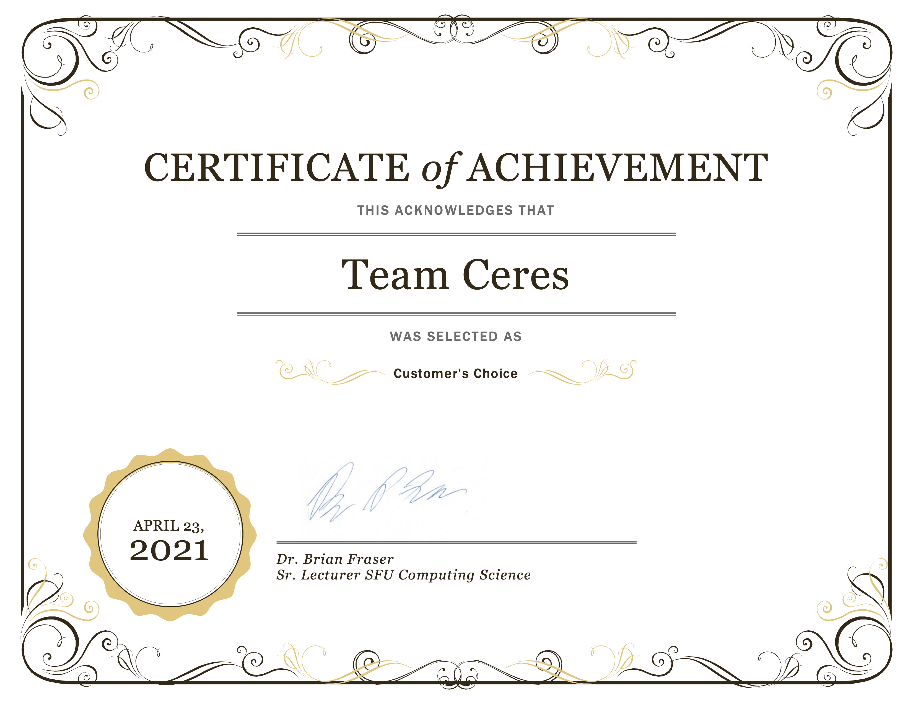

Project Overview
As part of a software development methodologies course at Simon Fraser University, over the span of 4 months, we, a team of 8 student developers, implemented a web application that assists programming course instructors evaluate students' code contribution within a development team.
The main purpose of this 4-month project is to mimic an Agile development team in the industry, allowing the students to collaborate with other students in a Scrum team, applying software development methods and getting a hands on practice of the theoretical concepts, while working on a product that would be delivered to the real-world customer by the end of the course.
Requirement Analysis
Upon receiving the requirement documents and specifications from the customer, our team conducted a meeting to analyze and break down the requirements into potential implementable features for the application. Having a strong organizational skills and an enthusiasm for UI/UX design, I took initiative and turned the team's brainstormed ideas to a Figma prototype in order for us to better visualize the application.
This was a rough prototype that captured the basic application's functionalities, and gave us the team a possible flow of the application. After proposing this Figma prototype, I was trusted by my team to be the gate-keeper of the application's overall UI design (Yay!).
Implementation
With the Figma mockup at hand as a basis, the team started to work on the actual implementation of the application. After a couple of weeks, we had an iteration checkpoint with the customer for reviews.
The customer gave our team very informative feedbacks, after which I adjusted the Figma mockup to reflect the changes.
One of the feedbacks we received from the customer was that they want the app navigation bar to always be present on the screen without the user having to toggle to open and close it.
Challenge
Beside being the gate-keeper of the UI/UX design of our application, I was a part of the front-end team. The actual application was built using React framework for the front-end, and Node.js and Express.js for the back-end development. Having no previous experience with web concepts, let alone using the tools and frameworks for development, I had little involvement in using the mentioned frameworks and had to picked up the necessary skills quickly to catch up with my other team members.
I admittedly was overwhelmed at first, but luckily, my teammates were really understanding and helped me out a lot with learning React. By the end of the project, I managed to implement a full page of the application by myself from start to finish, successfully getting around to retrieving GitLab merge requests' and issues' notes (or comments) through GitLab API, saving the data in the database, and implementing React components to display the content on the page.
Result
There were 7 teams in total who worked on this GitLab Iteration Analyzer web application, with the same specifications and requirements, but only one team's product would be chosen by the customer to progress to continued development and would be put into active use in the future. Our team was chosen, and we won the Customer's Choice Award!!! (Yay!)
The application
Check out our team's interactive prototype of GitLab Iteration Analyzer on Figma below.
Open Figma prototype
While the actual application is not available for public use, you can watch our team's presentation of the final product on YouTube.
Watch our presentation
Final note:
The web application itself went to further development after the course, and has been carried out by another developer team ever since.